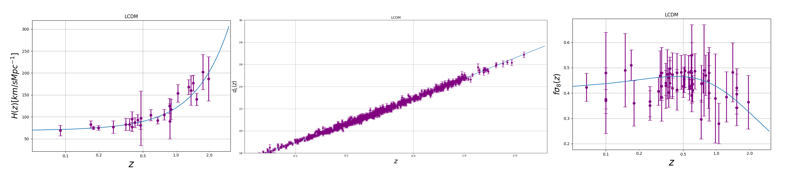
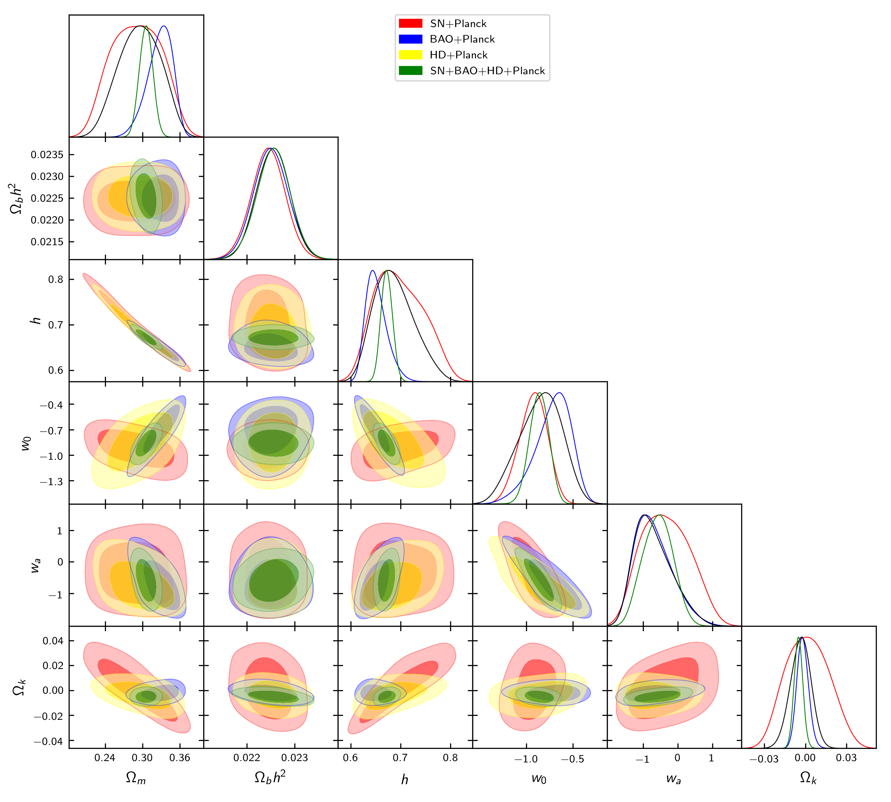

Data¶
The data avaiable in SuperMC is the following:
- Supernovaes Type 1a: Union2.1.
- Cosmic Chronometers: From https://arxiv.org/abs/1601.01701 and …
- Baryonic Acoustics Oscillations: DR11LOWZ, DR11CMASS, 6dF Galaxy Survey, DR11 Lyman alpha and SDSS Main Galaxy Sample BAO.
- Planck: WMAP9 and other reduced data.

Datasets combinations¶
Note
For a CPL model, we can test different combination of datasets avaliables in SuperMC.
